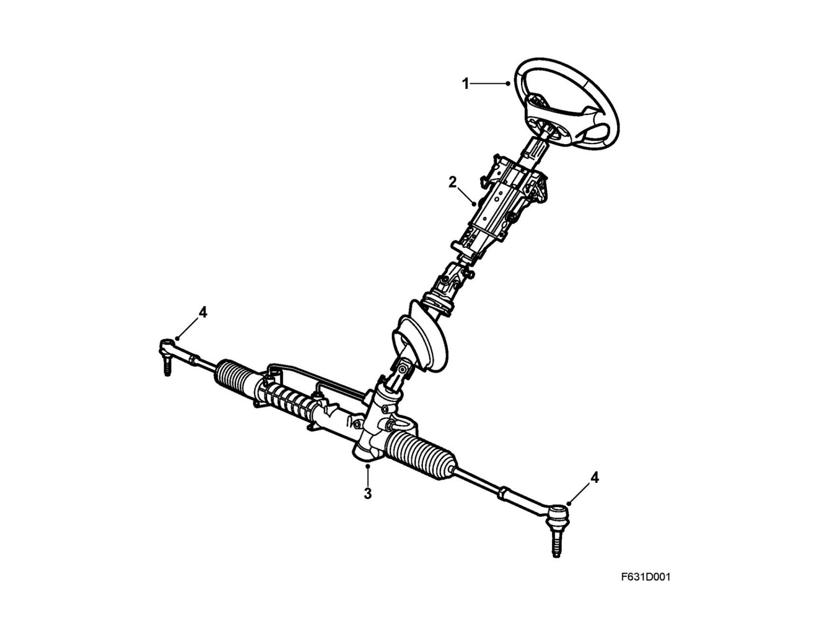
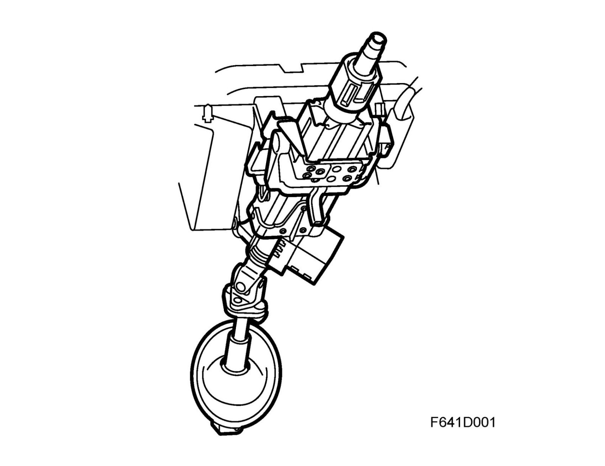

Steering Linkage
Steering linkageOverview

1. Steering wheel
2. Steering shaft
3. Steering gear
4. Track rod
Steering linkage
The car is steered using the steering wheel (1), steering shaft/steering column assembly (2) and the steering gear (3), which is mounted on the subframe and is connected to both steering swivels through the track rod ends (4).
Steering column assembly

The steering column assembly is screwed into the steering wheel member. The steering shaft is mounted in two ball bearings (one at the steering wheel and one at the bottom). The steering column is connected to the power-assisted steering gear via a jointed intermediate shaft.
For reasons of safety, the steering column assembly and steering column are telescopic to allow for deformation in the event of a head-on collision. The location of the universal joint also means that the steering column is displaced in a direction beneficial to the driver in the event of a collision. The position of the steering wheel spokes can be adjusted by changing the length of the track rod on the left and right-hand side.
The steering column can be adjusted ±2° vertically, which gives 20-22 mm at the steering wheel rim, and ±25 mm longitudinally. When making longitudinal adjustments, the lock mechanism might set in a "meshed gear" position in an undesirable steering wheel position. This can be overridden by pulling the steering wheel somewhat towards you or pushing it somewhat away from you.
The steering shaft has an electric steering wheel lock that locks the steering shaft through a combination of electronic and mechanical operations. In some situations, for example in the locked position, the lock piston of the steering wheel lock might jam against the locking segment of the steering shaft. A message is displayed in SID indicating that one should turn the wheel and activate the lock by removing and reinserting the key in the ignition switch.
Note
The steering wheel lock should always be removed and refitted in an unlocked position.
The steering wheel lock cannot be "test driven". It must be mounted correctly in the steering column assembly.